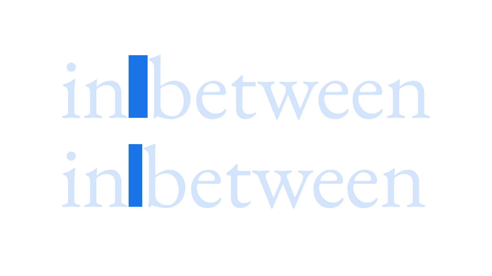

Spaces
By Google Fonts Knowledge contributors · Google Fonts Knowledge.
Original article · Source on GitHub · CC BY-SA 4.0. Text, illustrations and existing credits reproduced from the licensed Knowledge repository. Open Shelf adapted the layout and links; these adaptations are also CC BY-SA 4.0. No endorsement implied.
Spaces are glyphs that contain no visible strokes but still have specific values for width, and occupy a unique unicode cell in the glyph table.

A hair space is the thinnest of all spaces and can be used either side of an en dash or em dash—although that’s down to the style guide we’re referencing. A thin space is slightly wider (around 15%–20% of an em) and again can be employed around dashes according to the preferences of the style guide.
Non-breaking spaces are added between words that need to stay together in any event. If the last word in the sequence doesn’t fit on the end of the line, all words connected with non-breaking spaces will shift to the next line. This is useful when avoiding orphans, but should be used with care.